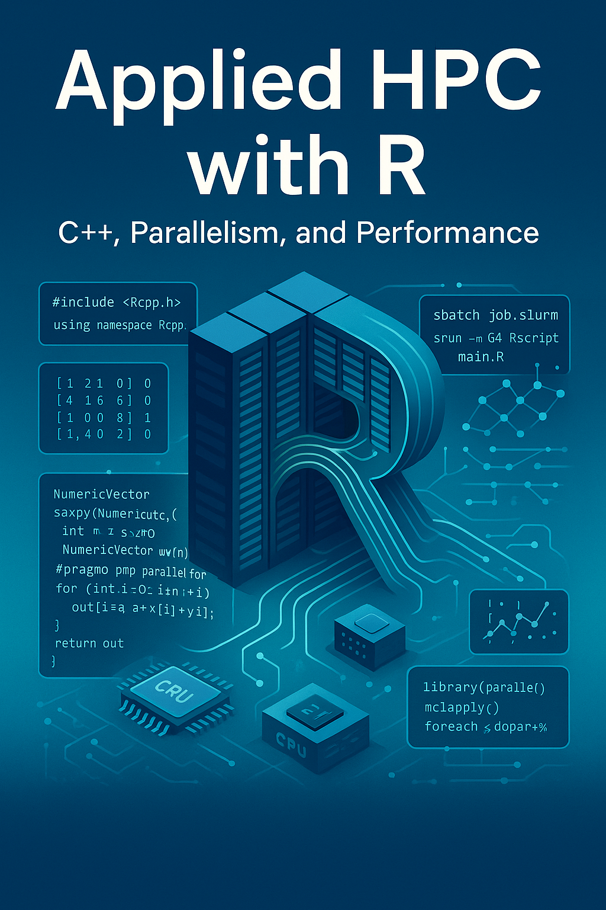

HPC Aplicado con R
C++, Paralelismo y Rendimiento
Prefacio

El lenguaje de programación R (R Core Team 2023) puede ser fantástico para la mayoría de las tareas diarias. Pero tan pronto como comienzas a lidiar con problemas más complicados, puedes enfrentarte al cuello de botella del bucle for. Si alguna vez te encuentras con tal problema, este libro es para ti. HPC Aplicado con R es una colección de charlas y conferencias que he dado sobre cómo acelerar tu código R usando computación paralela y otros recursos como C++. Los contenidos se han desarrollado principalmente durante mi tiempo en USC y UofU.1
El libro fue escrito usando quarto y está alojado en GitHub, donde puedes acceder a todo el código fuente.
Sobre el Autor
Soy Profesor Asistente de Investigación en la División de Epidemiología de la Universidad de Utah, donde trabajo estudiando Sistemas Complejos utilizando Computación Estadística. Nací y crecí en Chile. Tengo más de diez años de experiencia desarrollando software científico con enfoque en computación de alto rendimiento, visualización de datos y análisis de redes sociales. Mi formación es en Políticas Públicas (M.A. UAI, 2011), Economía (M.Sc. Caltech, 2015), y Bioestadística (Ph.D. USC, 2020).
Obtuve mi Ph.D. en Bioestadística bajo la supervisión del Prof. Paul Marjoram y la Prof. Kayla de la Haye, con mi disertación titulada “Essays on Bioinformatics and Social Network Analysis: Statistical and Computational Methods for Complex Systems.”
Si deseas aprender más sobre mí, por favor visita mi sitio web en https://ggvy.cl.
Sobre la versión en Español
Esta versión en español del libro fue creada para hacer accesible el contenido sobre computación de alto rendimiento con R a la comunidad hispanohablante. Aunque se ha hecho un esfuerzo por mantener la precisión técnica y el contexto, algunos términos especializados pueden requerir revisión adicional. La versión original en inglés permanece como la referencia autorizada.
Los lectores que encuentren errores de traducción o áreas que requieran clarificación son bienvenidos a contribuir reportando problemas en el repositorio de GitHub del proyecto.
Divulgación sobre IA
A partir de mediados de 2023, he estado utilizando IA para ayudarme a escribir este libro. Principalmente, uso una combinación de GitHub co-pilot, que ayuda con código y texto. El papel de la IA ha sido ayudarme a escribir más rápido y con mayor precisión, pero no ha estado involucrada en la conceptualización del libro o el desarrollo de los métodos presentados aquí.
Sobre la portada
La imagen de portada fue creada usando ChatGPT/Dall-E versión 5 usando el prompt “Necesito que dibujes una imagen que represente computación de alto rendimiento usando el lenguaje de programación R (que se usa principalmente para estadística). La imagen irá como portada del libro”Applied HPC with R”. Debería incluir componentes relacionados con C++, computación paralela, y computación de alto rendimiento”
Con muchos a quienes agradecer, incluyendo Paul Marjoram, Zhi Yang, Emil Hvitfeldt, Malcolm Barrett, Garrett Weaver, el grupo de investigación IMAGE P01 de USC, y mis estudiantes tanto en USC como en UoU.↩︎